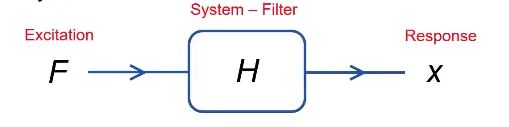

Objective
The objective of this project was to create a program that would take in a stock symbol from a user and return a suggested method of trading based on the stock’s history. For the purposes of this project, we designed our program to be able to handle user-specified resolutions of a day, week, or month over a specified range of dates.Team Member
Pre-Processing
The individual stock data was fetched from online open API, where we are able to get price of up to the past 20 years given the stock symbol. To analyze the long term trend from the highly fluctuating raw stock price, we started by applying several DSP preprocessing techniques to filter out noise.Contents
Simple Moving Average Filter (SMA) Exponentially Weighted Moving Average Filter (EWMA) Kalman FilterSimple Moving Average Filter (SMA)
The simple moving average filter is one the most commonly used FIR filters to reduce the noises and get the long term trend from the signal. The simple moving average is the unweighted mean of the data over a specific period, which can be calculated from equation \eqref{eq:sma}. \begin{align} y[n]=\dfrac{1}{N}\sum_{k=1}^N x[n-N+k] \label{eq:sma}. \end{align} Ideally, if the raw data contains zero centered periodic fluctuations, a simple moving average filter is able to completely eliminate the noises. Another property of the SMA filter is that SMA always lags behind the actual data since it takes the previous \(n\) data in the calculation.Exponentially Weighted Moving Average Filter (EWMA)
An exponentially weighter moving average filter is the IIR moving average filter, where the weight factor decreases exponentially. It can be calculated using the recursive relation from equation \eqref{ewma}. \begin{align} y[n]=\alpha x[n] + (1 - \alpha) y[n-1]\label{ewma}, \end{align} The response is smoother as the factor \(\alpha\) decreases. Typically the EWMA filter has less lag and are therefore more sensitive to the changes in the raw data than the SMA, but depending on the shape of the raw data, it is possible for one to not necessarily be better than the other.Kalman Filter
The Kalman filter, also known as a linear quadratic estimation (LQE), is a two-stage filter which estimates the state of a dynamic system based on a series of measurements containing unknown noises and inaccuracies. It recursively makes predictions based on the previous state and then corrects the predictions based on the new measurement. It is based on the discrete linear dynamic system which could be written as \begin{align} X(t+1)&=\Phi X(t)+\Gamma w(t)\label{ssm1}\\ y(t)&=H X(t)+v(t)\label{ssm2} \end{align} The recursive relation on predictions and corrections are shown in equations \eqref{kalman1} - \eqref{kalman2} \begin{align} \text{Prediction:}~~~~~ & \hat{\mathbf{x}}_{k| k-1} = \mathbf{F}_k\hat{\mathbf{x}}_{k-1| k-1} + \mathbf{B}_k \mathbf{u}_k \label{kalman1}\\ &\mathbf{P}_{k| k-1} = \mathbf{F}_k \mathbf{P}_{k-1| k-1} \mathbf{F}_k^\mathbf{T} + \mathbf{Q}_k\\ \text{Correction:}~~~~~ & \mathbf{v}_k=\mathbf{z}_k-\mathbf{H}_k\hat{x}_{k|k-1}\\ & K_{k}=P_{k|k-1}\mathbf{H}^T(\mathbf{H}P_{k|k-1}\mathbf{H}^T+R)^{-1}\\ & \hat{\mathbf{x}}_{k|k}=\hat{\mathbf{x}}_{k| k-1}+\mathbf{K}_k\mathbf{v}_k\\ & \mathbf{P}_{k|k}=(\mathbb{I}-\mathbf{K}_k)\mathbf{P}_{k|k-1}\label{kalman2} \end{align} By recursive predictions and corrections, one is able to dynamically track the non-stationary system. One advantage of using the Kalman filter is that it doesn't make an assumption on the distribution of noises, which allows it to be used on more general signals . In order to apply it on the stock prices, a simple assumption is made based on the high fluctuation of the stock price to model the stock market as a maneuvering dynamic system, that is \begin{align} x(t+1)=x(t)+T\dot{x}(t)+\dfrac{1}{2}a(t) T^2\\ \dot{x}(t+1)=\dot{x}(t)+a(t) T\\ y(t)=x(t)+v(t) \end{align} where \(x\) and \(\dot{x}\) are the stock price and its change rate, \(y\) is the measurement and \(v\) is the measurement noise. If we regard the acceleration \(a\) as a white noise sequence, we can model the stock market as a linear dynamic system described in equation \eqref{ssm1}-\eqref{ssm2}, with \begin{align*} X(t)=\left[\begin{array}{c}x(t)\\\dot{x}(t)\end{array}\right]&& \Phi=\left[\begin{array}{cc}1&T\\0&1\end{array}\right],&& \Gamma=\left[\begin{array}{c}\frac{T^2}{2}\\T\end{array}\right],&& H=\left[\begin{array}{cc}1&0\end{array}\right]&& w(t)=a(t) \end{align*}Forecast
Multiple Linear Regression
Multiple Linear Regression is performed on a data set either to predict the response variable based on the predictor variable, or to study the relationship between the response variable and predictor variables. It is one of the most fundamental and commonly used regression models and is readily applied. In application, the linear regression trys to fit a linear model of the form \begin{align} Y= b_0 + b_1X_1 + b_2X_2+ \dots + b_kX_k+ e \end{align} on a given dataset, where \(Y\) is the dependent variable (response), \(X_1, X_2,\dots,X_k\) are the independent variables (predictors), \(e\) is the random error, and \(b_0 , b_1, b_2, \dots, b_k\) are known as the regression coefficients, which have to be estimated from the data .
In this project, we applied multiple linear regression on the price and date, which gave a general trend of the stock price and thus were able to extrapolate the price trend.
Prony’s Algorithm
Prony’s Algorithm was developed by Gaspard Riche de Prony in 1795, and similar to that of Fourier Transform, Prony’s Algorithm extracts the important components of a signal using a series of complex exponentials instead of trigonometric functions. Unlike Fourier transform, Prony’s algorithm is much better suited for the analysis of our model as majority of our stock market trends are not only non-periodic, but also correspond to that of exponential functions. \begin{align} j_{km}(t;s_n,R_n)=2\sum_n \Re\left(_nR_{km}e^{s_nt}\right)\label{prony} \end{align}
Equation \eqref{prony} shows how Prony's method can be used to show the impulse response is comprised of a series of complex exponentials. However, for the scope of this project, we use this property of the Prony’s algorithm to find out the digital filter coefficients in order to predict the future trend using the previous stock market data. \begin{align} H(z)=\dfrac{\sum_{k=0}^q b[k]z^{-k}}{1+\sum_{l=0}^p a[l]z^{-l}}, \end{align} where \(a\) is coefficient of the zeros and \(b\) is coefficient of the poles.

Specific time series of data (either closing or opening price) are used to determine the coefficients from numerator and denominator of the filter using MATLAB. Based on the determined transfer function of the filter, an impulse response can be used extrapolate the future trends of the desired variable.
Kalman Filter
As is introduced in pre-processing section, the Kalman filter is able to make one step ahead prediction, which is also very important especially for those short-term investors, though it does not work well on predicting the long term trend. To predict the next day's price, we simply implement the Kalman filter on the previous price and do the prediction step given in equation \eqref{kalman1} once more.
\(n\)={{sma_n}}
\(\alpha\)={{ewma_a}}